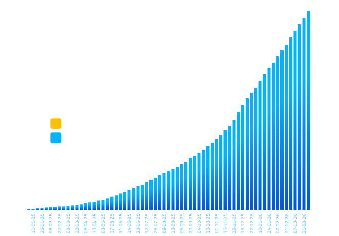

01 / Current landscape
Frontier developments
Organization control
MediumShared coding agents become an organization-managed product surface
What it is
GitHub’s August 28 Visual Studio update lets organization and enterprise owners publish custom agents across repositories. Developers can see each agent’s description and organizational source in the picker; the release also adds low, medium, and high reasoning effort, clearer model capability and cost information, and review of commits or uncommitted changes through the Git agent before a pull request.
What is actually new
The meaningful extension is centralized distribution of specialized agents plus explicit reasoning-cost controls inside the IDE. The capabilities reach every Copilot plan, although sharing requires a GitHub organization.
What is not new
Repository instructions, assistants, model selectors, and automated review already exist in Copilot and Cursor. This packages familiar capabilities into a governable Visual Studio workflow; it does not invent coding agents.
Why it matters
An agent can embody team policy but can also spread stale or unsafe instructions at organization scale. Reasoning effort turns quality, latency, and token consumption into explicit product and economic controls rather than hidden implementation details.
How to apply it
- Pilot one agent on a bounded job such as migration checks before organization-wide publication.
- Assign an owner, version its instructions, and log acceptance, edit, and reversal rates.
- Compare low and high effort on defect escape, latency, and cost per accepted change.
Medium confidence; meaningful extension. GitHub provides no comparative quality, productivity, or cost results, so broader deployment should follow a measured pilot.
Sources [1]
Supplier risk
High / impact uncertainCursor’s model cutoff makes supplier concentration visible
What it is
Cursor announced on August 14 that SpaceX had completed its acquisition, promising access to more compute and lower-cost in-house models. On August 28, OpenAI said it intended to wind down model supply to Cursor with a proposed November 12 cutoff; CNBC independently reported the planned termination.
What is actually new
The new event is a concrete withdrawal date for a major upstream capability after a change of control. It converts a theoretical dependency into a timed migration, customer-communication, and continuity problem.
What is not new
Deplatforming, supplier concentration, and multi-model routing are established concerns. The novelty is the commercial trigger and compressed transition window—not model portability as a concept.
Why it matters
Supplier incentives can change after acquisitions or competitive moves. A model-neutral interface is not genuine portability when prompts, evaluations, latency targets, economics, and customer expectations are tuned to one provider.
How to apply it
- Route representative common, high-value, and worst-case tasks to the replacement stack; compare success, latency, refusals, and margin.
- Inventory customer promises and contract terms that change with the provider.
- Add change-of-control rights and transition assistance to critical-supplier reviews.
High confidence for the announced cutoff; customer impact remains uncertain. Cursor can substitute models, change its product mix, or negotiate supply, so the event proves exposure rather than a predetermined outcome.
GA distribution update
HighManaged web grounding creates a separately governable retrieval boundary
What it is
Amazon Bedrock Web Search is a built-in tool through which supported models can search an AWS-maintained index, optionally fetch pages, and return citations. IAM permissions can separately govern search, fetch, and external-web access; AWS also documents regional processing and CloudTrail monitoring.
What is actually new
Bedrock now makes search grounding a managed primitive rather than a bespoke tool loop, with distinct controls for index search, cached fetch, and live external access. The important delta is operational packaging and governance within Bedrock.
What is not new
OpenAI web search, Gemini grounding, and third-party search APIs already provide current retrieval. This is a material GA and distribution update, not a new category.
Why it matters
Teams can expose current information without allowing unconstrained browsing, but a displayed citation does not necessarily mean the full page was fetched: AWS says annotations may remain when fetch authorization fails. Retrieval state therefore belongs in telemetry and user-facing evidence design.
How to apply it
- Test index-only, cached-page, and live-web policies against the same evaluation set.
- Distinguish snippet-level from page-level evidence in the interface and logs.
- Measure unsupported claims, source quality, latency, and cost—not citation count alone.
High confidence for documented operation; material GA rollout. Model and region support are constrained, and independent retrieval-quality comparisons are not available.
Sources [4]
Data infrastructure
MediumBigQuery adds state to continuous queries
What it is
Google’s August 24–28 release roundup places stateful processing for BigQuery continuous queries in preview. Joins, aggregations, and window functions can now operate directly on streaming queries—for example, computing a rolling 30-minute metric for a downstream application or agent.
What is actually new
BigQuery continuous queries move from simpler event-by-event processing toward maintaining context across time and streams. For existing BigQuery teams, that can reduce the number of separate systems required for some near-real-time features.
What is not new
Flink, Kafka Streams, Materialize, and other cloud services already process stateful streams. This is a BigQuery extension, not a new data architecture.
Why it matters
Fraud detection, onboarding, usage limits, and retention outreach can react to sequences rather than isolated events. Faster execution also makes product decisions about lateness, window definitions, correction logic, and acceptable automated action more consequential.
How to apply it
- Prototype one reversible intervention rather than migrating a full pipeline.
- Measure freshness and false-positive cost alongside infrastructure performance.
- Retain a holdout so faster intervention is tested against customer outcomes.
Medium confidence; meaningful extension. Preview reliability, sustained-load cost, and migration economics versus established stream processors remain unproven.
Sources [5]
Production telemetry
MediumAgent telemetry points to two deployment shapes—not one maturity ladder

What it is
Salesforce’s August 7 Agentic Enterprise Index studies an aggregated cohort with agents active in production every month from February 2025 through April 2026. It distinguishes high-volume, narrow consumer workflows from lower-volume, multi-step deployments in operationally complex sectors, while reporting growth in agents per organization and completed ‘Agentic Work Units.’
What is actually new
The useful empirical extension is longitudinal production telemetry suggesting that skill breadth and work volume may represent different deployment strategies rather than sequential rungs on one maturity model.
What is not new
Vendor usage indexes and ‘work completed’ metrics are established. Salesforce defines the unit on its own platform, and the study does not show that agents caused the commercial outcomes discussed around the data.
Why it matters
A narrow, high-volume agent needs strong unit economics and exception handling; a multi-step regulated agent needs permissions, auditability, and recovery before scale. Comparing both on one adoption score hides the product decision.
How to apply it
- Segment the portfolio by task diversity, volume, reversibility, and exception cost.
- Use cost per successful work unit for narrow flows and human-reviewed completion plus incident severity for complex ones.
- Treat vendor-defined work units as hypotheses until they correlate with retained customer value and margin.
Medium confidence; meaningful empirical extension. The cohort includes persistent Agentforce users, Salesforce controls the definitions, and survivorship and selection limit causal interpretation.
Sources [6]
02 / Practice
Technique deep dive
The supplier-exit drill
Problem it solves. An abstraction layer may technically support several vendors while prompts, evaluations, contracts, operational procedures, and customer promises remain provider-specific. The drill turns claimed optionality into observed switching time and customer impact.
- 01
Choose the exit event
Test an immediate outage, a 30-day termination, or a 50% price increase. The scenario determines what continuity actually requires.
- 02
Map dependencies
Inventory models, APIs, embeddings, fine-tunes, safety filters, data residency, rate limits, contractual rights, and customer-facing claims.
- 03
Select representative jobs
Include the most common task, the highest-value task, and the worst credible failure. Average traffic alone will conceal the hard parts.
- 04
Run the substitute
Freeze the product version and measure task success, latency, cost, refusals, rework, and segment-specific regressions.
- 05
Rehearse operations
Revoke credentials, switch routing, validate logs, notify support and customers, and confirm rollback rather than stopping at an offline comparison.
- 06
Make the concentration decision
Fund portability gaps, accept concentration explicitly because the advantage exceeds exit cost, or renegotiate transition terms.
A research product’s backup model matches aggregate answer scores but changes URL formatting, doubles p95 latency, and cannot meet the same regional-processing promise. The team must normalize citation objects, set provider-specific latency budgets, and revise contracts before it can honestly claim failover.
Use when
Use when supplier loss would breach a customer promise, erase margin, or stop critical work; repeat after acquisitions, architectural changes, or contract renewals.
Avoid when
Do not fund expensive portability for low-impact components with easy manual replacement. Concentration can be rational when its measured advantage exceeds the exit cost.
Common failure modes. Testing only output quality; ignoring legal and data terms; using nonrepresentative traffic; never exercising credential revocation; and describing materially degraded service as equivalent.
03 / Reading
Book radar
O’Reilly Early Release, 2026 · partial-contents assessment
The Probabilistic Product
AI-native products require strategy designed for variable outputs, natural-language intent, and changing model supply; adding an AI feature to a deterministic product is not enough. Available chapters cover AI-native products, how AI works, and an ‘intent interface,’ while later strategy and data-moat chapters remain unavailable.
Ideas worth carrying forward
- Probabilistic quality is a product property: teams need distributions, failure classes, and recovery paths rather than a binary acceptance test.
- Intent changes the interface: users specify outcomes while the system chooses steps, making permissions and visible plans part of interaction design.
- AI-native is architectural, not cosmetic: if removing the model leaves the value proposition intact, the product may be AI-assisted rather than AI-native—a useful distinction for cost and defensibility.
- A data moat matters only when rights and feedback convert data into better outcomes. This is a hypothesis inferred from the planned chapter, not a summary of unavailable text.
Who benefits. Product leaders separating an AI-native strategy from feature opportunism and designing around variable output quality.
Limit. This is based on publisher material and available early-release contents, not a full-book read. Unavailable strategy, economics, and moat sections make any verdict provisional.
Read the available chapters if defining an AI-native thesis now; defer a definitive judgment until the later strategic and economic sections are complete.
04 / Foundations
One-way and two-way doors
Original idea
Amazon’s 2015 shareholder letter distinguishes hard-to-reverse Type 1 decisions from reversible Type 2 decisions and warns against applying slow Type 1 processes to both.
What still holds
Bounded experiments can move quickly. Irreversible data use, contracts, or autonomous financial actions require stronger evidence, authority, and recovery planning.
Common misuse
Teams often call code ‘reversible’ while ignoring migration cost, customer trust, data persistence, contractual lock-in, or regulatory exposure. Technical rollback is only one dimension of reversibility.
Modern update
Score reversibility across technical rollback, data deletion, economic loss, customer remedy, and reputational recovery. Pair door type with observability: an action that is theoretically reversible but cannot be detected promptly still deserves caution.
Which part of this decision is genuinely reversible, within what time, and for whom?
05 / Synthesis
Cross-cutting implications
Control is moving closer to execution
Organization-distributed agents, reasoning-effort settings, retrieval permissions, and stateful signals make governance part of the operating product rather than a policy applied afterward.
Portability must be demonstrated
A multi-model menu means little without measured substitution quality, economics, contractual continuity, and a customer-safe migration procedure.
Real-time capability requires decision design
Faster signals improve adaptation only when false-positive costs, holdouts, correction rules, and reversibility are explicit.
Agent measurement is specializing
Narrow high-volume work and complex multi-step work need different success, pricing, and risk metrics. More evidence is needed that vendor-defined work units correlate with retained value and margin outside selected cohorts.
Questions for the next product review
- If our primary model or data service disappeared in 30 days, which customer promise would fail first?
- Where are we using one dashboard to compare fundamentally different automation jobs?
- Which real-time intervention lacks a holdout, reversal path, or named owner?
Research ledger
Sources
- GitHub — Copilot in Visual Studio, August update ↗
- OpenAI — Decision on Cursor following its acquisition by SpaceX ↗
- Cursor — Cursor is now part of SpaceX ↗
- AWS — Web Search for Amazon Bedrock ↗
- Google Cloud — What’s new with Google Cloud ↗
- Salesforce — Agentic Enterprise Index 2025–2026 ↗
- O’Reilly — The Probabilistic Product ↗
- O’Reilly — The Probabilistic Product table of contents ↗
- Amazon — 2015 Letter to Shareholders ↗
- CNBC — OpenAI to end model access to Cursor ↗